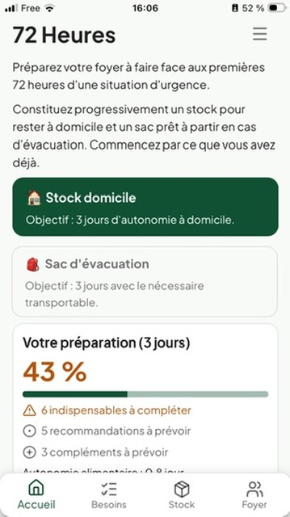
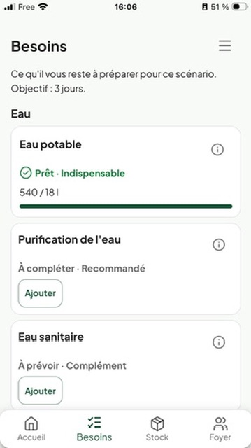
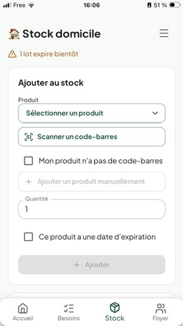

🏠
Deux préparations distinctes
Le stock conservé à domicile et le sac d’évacuation répondent à des contraintes différentes. 72 Heures les suit séparément.
72 Heures est une application mobile qui vous aide à constituer, suivre et maintenir vos réserves essentielles, à domicile comme dans votre sac d’évacuation.
Bientôt disponible • iOS & Android
Une première version gratuite sera disponible sur l’App Store et Google Play.

Acheter quelques réserves est facile. Savoir ce qu’il manque, où cela se trouve, ce qui arrive à expiration et si le foyer est réellement préparé l’est beaucoup moins. 72 Heures transforme cette gestion fastidieuse en un suivi simple et concret.
Le stock conservé à domicile et le sac d’évacuation répondent à des contraintes différentes. 72 Heures les suit séparément.
L’application compare les besoins de votre foyer avec les produits réellement présents dans vos réserves.
Quantités, lots et dates de péremption permettent de ne pas oublier un stock constitué des mois auparavant.


Chaque situation demande une préparation adaptée, sans mélanger les réserves du foyer et ce qui doit pouvoir être emporté.
Préparez votre foyer pour 3 jours, 3 semaines ou 3 mois : eau, alimentation, énergie, éclairage, hygiène, communication et plus encore.
Constituez une préparation dédiée à 72 heures, séparée du domicile, avec le sac et les équipements essentiels à emporter.
Indiquez le nombre d’adultes et d’enfants afin d’adapter les besoins.
Enregistrez vos produits et équipements dans le stock domicile ou le sac.
Les besoins sont comparés automatiquement à ce que vous possédez réellement.
Identifiez les priorités et entretenez votre préparation dans la durée.
72 Heures rassemble les informations utiles pour comprendre votre préparation et l’entretenir simplement.
« Préparez vos réserves, puis laissez l’application vous aider à les maintenir. »
Une première version gratuite est en préparation pour l’App Store et Google Play.